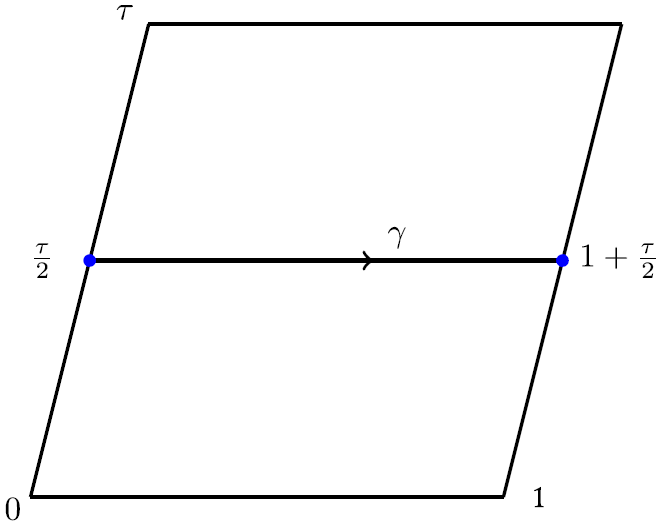

Riemann-Hilbert theory and asymptotics
Some textGeometry of monodromy manifolds Some text
affine lines
Quantisation, value distributions and Nevanlinna theory
Some text
Elliptic orthogonal polynomials
Some text
description
